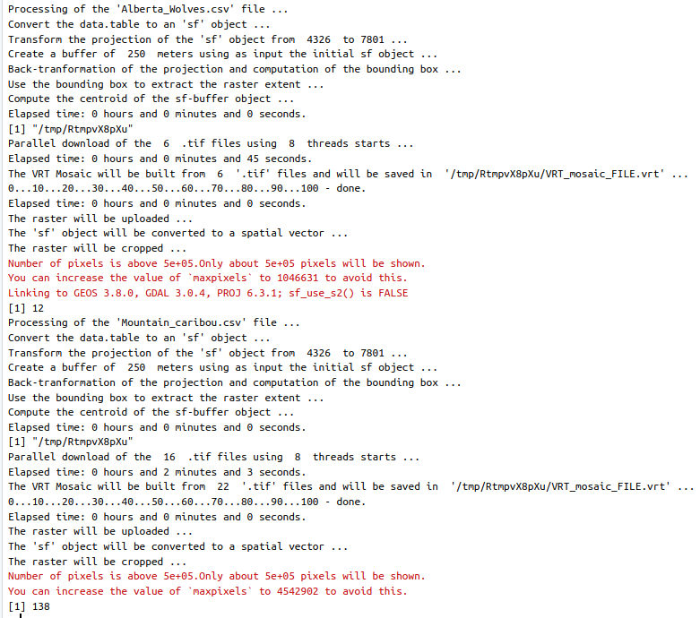

Copernicus Digital Elevation Models (an example use case)
Source:vignettes/Copernicus_Digital_Elevation_Models.Rmd
Copernicus_Digital_Elevation_Models.RmdIn this vignette I’ll explain how to use the CopernicusDEM R package based on a use case of the Movebank animal tracking data. I picked animal tracking data because there is an abundance in the Movebank archive from all over the world. In this specific vignette I’ll use data of Wolves from the northeastern Alberta and Caribou from the British Columbia (see the reference papers at the end of the vignette for more information).
The following wrapped code snippet creates the leaflet and tmap maps of this vignette, and it does the following:
- it loads the required files (Alberta_Wolves.csv and Mountain_caribou.csv)
- it iterates over the files
- inside the for-loop for each file (and animal) separately
- it keeps the required columns (‘longitude’, ‘latitude’, ‘timestamp’, ‘individual_local_identifier’, ‘individual-taxon-canonical-name’)
- it builds a simple features object of the input data.tables
- it creates a bounding box of the coordinate points
- it extends the boundaries of the bounding box by 250 meters (so that points close to the boundaries are visible too)
- it downloads and saves to a temporary directory the 30 meter elevation data for the Area of Interest (either for the ‘Wolves’ or the ‘Tarandus’)
- it creates a Virtual Raster (.VRT) mosaic file of the multiple downloaded Elevation .tif files
- it crops the Digital Elevation Model (DEM) using the previously created bounding box (the downloaded DEM’s cover a bigger area, because they consist of fixed grid tiles)
- it saves the tmap of each processed input file and the data.table which is required for the leaflet map to a separate list
files = c(system.file('vignette_data/Alberta_Wolves.csv', package = "CopernicusDEM"),
system.file('vignette_data/Mountain_caribou.csv', package = "CopernicusDEM"))
leafgl_data = tmap_data = list()
for (FILE in files) {
cat(glue::glue("Processing of the '{basename(FILE)}' file ..."), '\n')
dtbl = data.table::fread(FILE, header = TRUE, stringsAsFactors = FALSE)
cols = c('location-long', 'location-lat', 'timestamp', 'individual-local-identifier',
'individual-taxon-canonical-name')
dtbl_subs = dtbl[, ..cols]
colnames(dtbl_subs) = c('longitude', 'latitude', 'timestamp', 'individual_local_identifier',
'individual-taxon-canonical-name')
leafgl_data[[unique(dtbl_subs$`individual-taxon-canonical-name`)]] = dtbl_subs
dtbl_subs_sf = sf::st_as_sf(dtbl_subs, coords = c("longitude", "latitude"), crs = 4326)
sf_rst_ext = fitbitViz::extend_AOI_buffer(dat_gps_tcx = dtbl_subs_sf,
buffer_in_meters = 250,
CRS = 4326,
verbose = TRUE)
#................................................................
# Download the Copernicus DEM 30m elevation data because it has
# a better resolution, it takes a bit longer to download because
# the .tif file size is bigger
#...............................................................
dem_dir = tempdir()
dem30 = CopernicusDEM::aoi_geom_save_tif_matches(sf_or_file = sf_rst_ext$sfc_obj,
dir_save_tifs = dem_dir,
resolution = 30,
crs_value = 4326,
threads = parallel::detectCores(),
verbose = TRUE)
TIF = list.files(dem_dir, pattern = '.tif', full.names = TRUE)
if (length(TIF) > 1) {
#....................................................
# create a .VRT file if I have more than 1 .tif files
#....................................................
file_out = file.path(dem_dir, 'VRT_mosaic_FILE.vrt')
vrt_dem30 = CopernicusDEM::create_VRT_from_dir(dir_tifs = dem_dir,
output_path_VRT = file_out,
verbose = TRUE)
}
if (length(TIF) == 1) {
#..................................................
# if I have a single .tif file keep the first index
#..................................................
file_out = TIF[1]
}
raysh_rst = fitbitViz::crop_DEM(tif_or_vrt_dem_file = file_out,
sf_buffer_obj = sf_rst_ext$sfc_obj,
CRS = 4326,
digits = 6,
verbose = TRUE)
# convert to character to receive the correct labels in the 'tmap' object
dtbl_subs_sf$individual_local_identifier = as.character(dtbl_subs_sf$individual_local_identifier)
# open with interactive viewer
tmap::tmap_mode("view")
map_coords = tmap::tm_shape(shp = dtbl_subs_sf) +
tmap::tm_dots(col = 'individual_local_identifier')
map_coords = map_coords + tmap::tm_shape(shp = raysh_rst, is.master = FALSE, name = 'Elevation') +
tmap::tm_raster(alpha = 0.65, legend.reverse = TRUE)
tmap_data[[unique(dtbl_subs$`individual-taxon-canonical-name`)]] = map_coords
}
Now, based on the saved data.tables we can create first the leaflet map to view the data of both animals in the same map,
#.....................................
# create the 'leafGl' of both datasets
#.....................................
dtbl_all = rbind(leafgl_data$`Canis lupus`, leafgl_data$`Rangifer tarandus`)
# see the number of observations for each animal
table(dtbl_all$`individual-taxon-canonical-name`)
# create an 'sf' object of both data.tables
dat_gps_tcx = sf::st_as_sf(dtbl_all, coords = c("longitude", "latitude"), crs = 4326)
lft = leaflet::leaflet()
lft = leaflet::addProviderTiles(map = lft, provider = leaflet::providers$OpenTopoMap)
lft = leafgl::addGlPoints(map = lft,
data = dat_gps_tcx,
opacity = 1.0,
fillColor = 'individual-taxon-canonical-name',
popup = 'individual-taxon-canonical-name')
lft
The tracking data of the Caribou are on a higher elevation compared to the data of the Wolves. This is verified by the next tmap which includes the Elevation legend (layer). The additional legend shows the individual identifier of the animal - for the Tarandus there are 138 unique id’s whereas
tmap_data$`Rangifer tarandus` # caribou
tmap_data$`Canis lupus` # wolvesfor the Wolves only 12,

Elevation data using the CopernicusDEM R package can be visualized also in 3-dimensional space. For the corresponding use case have a look to the Vignette of the fitbitViz package which uses internally the Rayshader package.
Movebank References:
-
Latham Alberta Wolves
- Latham ADM (2009) Wolf ecology and caribou-primary prey-wolf spatial relationships in low productivity peatland complexes in northeastern Alberta. Dissertation. ProQuest Dissertations Publishing, University of Alberta, Canada, NR55419, 197 p. url:https://www.proquest.com/docview/305051214
- Latham ADM and Boutin S (2019) Data from: Wolf ecology and caribou-primary prey-wolf spatial relationships in low productivity peatland complexes in northeastern Alberta. Movebank Data Repository. :10.5441/001/1.7vr1k987
-
Mountain caribou in British Columbia-radio-transmitter
- BC Ministry of Environment (2014) Science update for the South Peace Northern Caribou (Rangifer tarandus caribou pop. 15) in British Columbia. Victoria, BC. 43 p. https://www2.gov.bc.ca/assets/gov/environment/plants-animals-and-ecosystems/wildlife-wildlife-habitat/caribou/science_update_final_from_web_jan_2014.pdf url:https://www2.gov.bc.ca/assets/gov/environment/plants-animals-and-ecosystems/wildlife-wildlife-habitat/caribou/science_update_final_from_web_jan_2014.pdf
- Seip DR and Price E (2019) Data from: Science update for the South Peace Northern Caribou (Rangifer tarandus caribou pop. 15) in British Columbia. Movebank Data Repository. :10.5441/001/1.p5bn656k